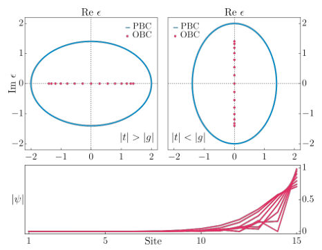
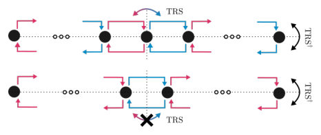
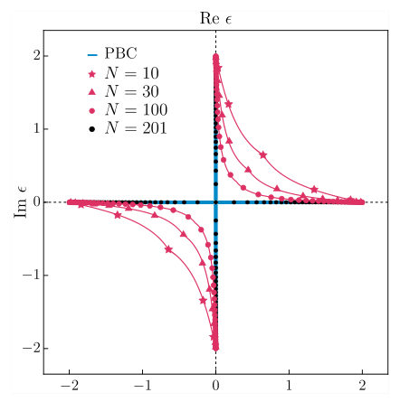

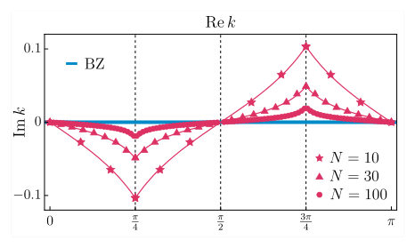
← Index · ← Previous · Next →
Authors: J. Rivera-Dean, T. Rook, G. Singh, P. Stammer, M. Khokhlova, E. Pisanty, C. Figueira de Morisson Faria
Type: theory · Category: quantum information and computing · PDF: https://arxiv.org/pdf/2605.31160v1
Analysis basis: full PDF text, analyzed in chunks
Topic relevance: entanglement & information structure 2/5 · measurement-induced transitions 2/5 · quantum measurements 2/5 · Keldysh / 2PI / non-Gaussian methods 1/5 · analog quantum simulation 1/5 · driven-dissipative phase transition 1/5 · interference shaping light 1/5 · methods for driven-dissipative 1/5
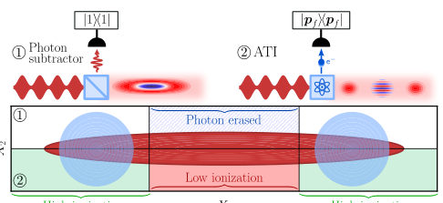
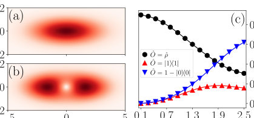
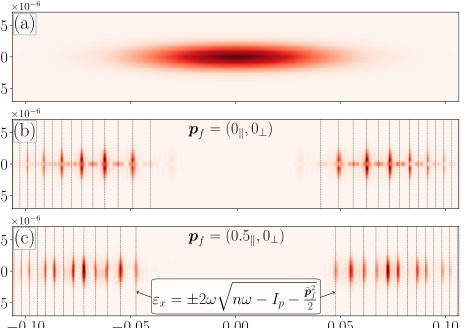
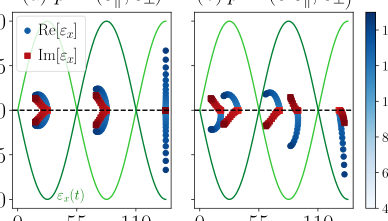
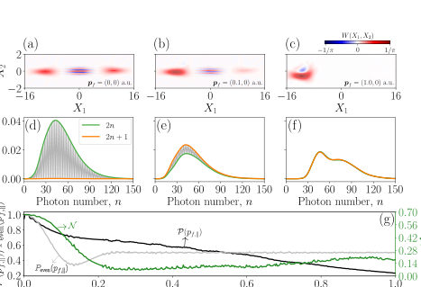
Summary. This paper shows that the process of Above-Threshold Ionization (ATI) driven by squeezed light can serve as a powerful, scalable mechanism analogous to photon subtraction in quantum optics. By detecting photoelectrons, the system filters the quantum state to generate large-amplitude optical Schrödinger cat states. These states exhibit clear non-classical features, allowing for the violation of Bell inequalities, thus opening strong-field physics for quantum state engineering.
Why it may be interesting. This work bridges fundamental quantum optics concepts (cat states, photon subtraction) with high-intensity, non-linear strong-field physics (ATI), proposing a novel, scalable platform for generating macroscopic quantum states.
Main problem. The primary challenge is generating large-amplitude optical Schrödinger cat states, as standard photon subtraction protocols are limited in scalability and achievable macroscopicity.
Main result. The authors demonstrate that Above-Threshold Ionization (ATI) driven by bright squeezed light acts as a scalable, strong-field analogue of photon subtraction, enabling the generation of large-amplitude cat states that can violate a Bell inequality.
Method. The work employs a combination of quantum optics theory (photon subtraction formalism) and strong-field physics (ATI path integrals) to establish an analogy between the two processes.
Model / system. The system involves bright squeezed vacuum light interacting with atoms undergoing Above-Threshold Ionization (ATI). The theoretical framework models the post-selected optical state $|\Phi(\mathbf{p}_f, t) angle$ resulting from photoelectron detection.
Key observables. Wigner function negativity, violation of Bell inequalities (CHSH value), and the structure of the photoelectron probability amplitude $ ilde{c}(\alpha)$.
Important parameters / regimes. The squeezing strength ($r$), the detected photoelectron momentum ($\mathbf{p}_f$), and the finite momentum resolution ($\sigma_\mu$) are key parameters analyzed.
Assumptions / limitations. The analysis relies on semiclassical approximations (saddle-point methods) and assumes that the photoelectron detection acts as a highly selective, non-linear filter on the quantum state.
Figures summary. Figures illustrate the comparison between photon subtraction and photoelectron heralding, show the transformation of probability amplitudes, and display Wigner functions confirming cat-like features and Bell inequality violations.
Paper structure. The paper builds by first establishing the theoretical analogy between photon subtraction and ATI heralding. It then uses path integrals and semiclassical methods to derive the post-selected state, characterizes its non-Gaussian features, and finally tests its non-classicality by violating a Bell inequality while analyzing the impact of experimental noise.
While the interface between strong-field physics and quantum optics offers a unique regime for combining extreme nonlinearity with quantum optical resources, its potential for generating non-classical states of light remains largely unexplored. Standard protocols for generating optical Schrödinger cat states, such as photon subtraction from squeezed light, are inherently limited in the achievable macroscopicity of the state and its scalability. In this work, we bridge this gap by demonstrating that above-threshold ionization driven by bright squeezed light provides a strong-field analogue of photon subtraction, where photoelectron detection acts as a high-intensity heralding mechanism, enabling the generation of large amplitude optical Schrödinger cat states. We characterize the resulting non-Gaussian features and show that they can be tuned via the detected photoelectron momentum, and study their robustness against the experimental imperfections arising from finite momentum resolution at the heralding step. Despite the noise, we show that the generated states can be manipulated to violate a Bell inequality, thereby highlighting their potential for foundational and practical applications. Our results establish strong-field processes as a scalable platform for macroscopic quantum state engineering, opening a route to quantum optics in previously inaccessible regimes.
Authors: Hwai-Ray Tung, Sean D Lawley
Type: theory · Category: statistical mechanics · PDF: https://arxiv.org/pdf/2605.30629v1
Analysis basis: full PDF text, analyzed in chunks
Topic relevance: non-equilibrium dynamics 2/5 · non-equilibrium universality 2/5 · Keldysh / 2PI / non-Gaussian methods 1/5 · driven-dissipative phase transition 1/5 · methods for driven-dissipative 1/5
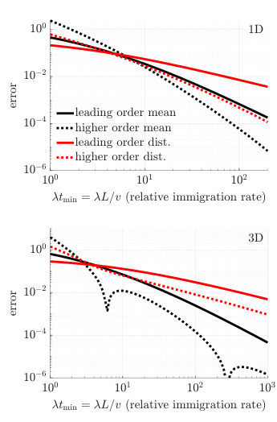
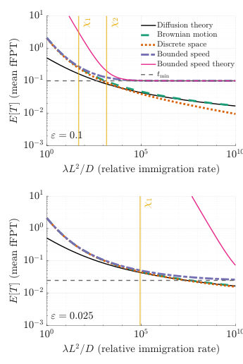
Summary. This paper develops rigorous mathematical results for estimating the time required for a search process to find a target when searchers arrive continuously (immigrate). It extends existing theory to account for searchers moving at a bounded speed, deriving exact distributions and moments in the fast immigration limit. The results are applied to canonical models like Brownian motion and run-and-tumble dynamics.
Why it may be interesting. While the core topic is stochastic search, the mathematical machinery involving convergence theorems, moment calculations, and the comparison between different physical diffusion models (BM vs. run-and-tumble) is highly relevant to non-equilibrium statistical physics and transport phenomena.
Main problem. The paper investigates the search times for searchers that progressively enter or 'immigrate' into a domain at a constant Poissonian rate, specifically addressing the case where searchers move at a bounded speed.
Main result. In the fast immigration limit, the probability distribution and moments of the $k$-th search time ($T_k$) are determined, showing convergence to Erlang distributions.
Method. The analysis uses properties of inhomogeneous Poisson point processes and derives survival probabilities based on the short-time behavior of the single-searcher first passage time distribution.
Model / system. The models analyzed include 1D, 2D, and 3D run-and-tumble processes, Brownian motion, and linear PDMPs, all subjected to a constant immigration rate ($\lambda$).
Key observables. The $k$-th First Passage Time ($T_k$) and its moments ($E[T_k^m]$).
Important parameters / regimes. Immigration rate ($\lambda$), system size ($L$), searcher speed ($v$), and the characteristic time scale ($t_{\min} = L/v$).
Assumptions / limitations. The analysis is rigorously performed in the fast immigration limit ($\lambda o \infty$) and assumes the underlying single-searcher process ($ au$) has a specific short-time distribution.
Figures summary. Figure 1 compares the relative error of theoretical approximations against stochastic simulations for four different search models. Figure 2 compares the mean first passage time across three processes (BM, discrete, run-and-tumble) showing convergence/divergence regimes.
Paper structure. The paper develops general theorems for the fast immigration limit, applies these theorems to various physical models (run-and-tumble, BM), and compares the theoretical predictions against numerical simulations, paying close attention to the breakdown of approximations in different parameter regimes.
Many biophysical search processes employ searchers which enter or "immigrate" into the domain progressively over time. Existing search time estimates can become unphysical for fast immigration since they imply that searchers move at infinite speed. In this paper, we investigate search times of immigrating searchers that move at bounded speed. In the fast immigration limit, we determine the full probability distribution and all the moments of the $k$th search time in terms of the early time probability distribution of a single searcher. We apply these rigorous mathematical results to several canonical models of stochastic search. We further analyze different models of "diffusion" and use these results to investigate when and how the minutiae of searcher dynamics affect search times. We compare our theory to numerical simulations.
Authors: Federico Balducci, Paul M. Schindler, Andrea Solfanelli, Marin Bukov
Type: theory · Category: statistical mechanics · PDF: https://arxiv.org/pdf/2605.31472v1
Analysis basis: full PDF text, analyzed in chunks
Topic relevance: analog quantum simulation 2/5 · driven-dissipative phase transition 1/5 · entanglement & information structure 1/5 · non-equilibrium dynamics 1/5 · non-equilibrium universality 1/5
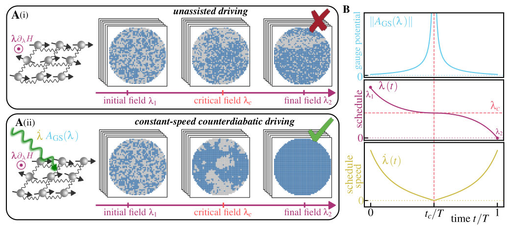
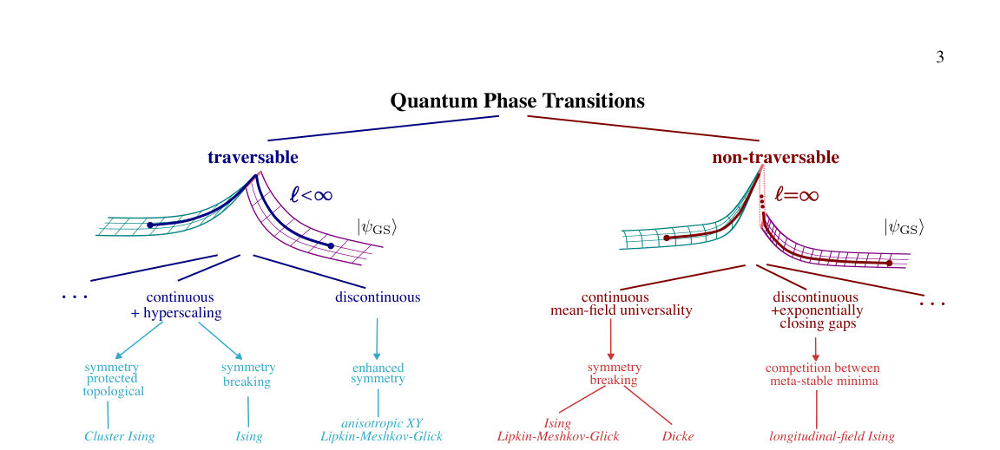
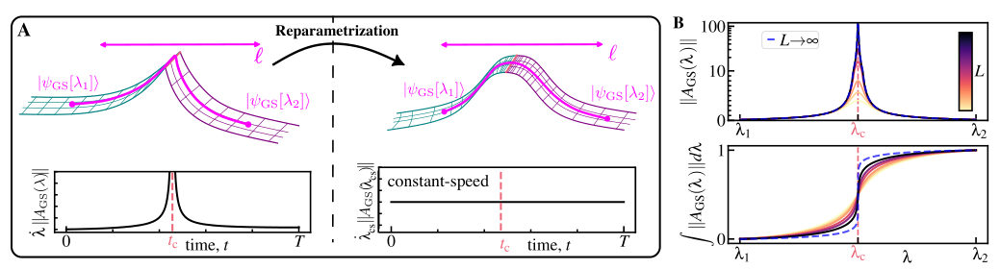
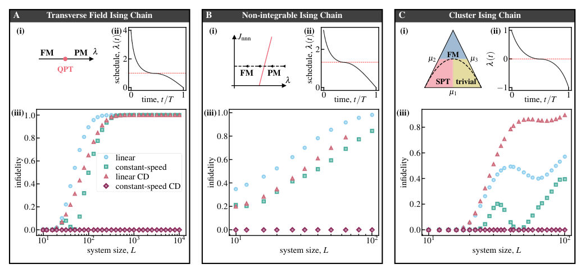
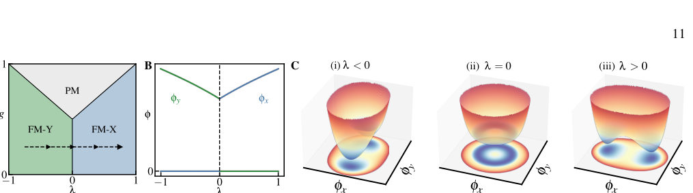
Summary. This paper introduces a novel geometric criterion to classify Quantum Phase Transitions (QPTs) as either 'traversable' or 'nontraversable'. Traversability is determined by whether the ground-state manifold has a finite geometric distance across the transition point, which is tested using counterdiabatic driving techniques. This classification offers a fundamental, dynamical understanding of QPTs, independent of local order parameters.
Why it may be interesting. This work provides a powerful, geometry-based diagnostic tool that transcends traditional classifications (like symmetry breaking or RG fixed points) for understanding the dynamical feasibility of quantum state preparation.
Main problem. The paper aims to develop a geometric classification of Quantum Phase Transitions (QPTs) based on whether the transition can be dynamically connected (traversed) between the two phases.
Main result. A QPT is classified as 'traversable' if the geometric distance between the ground states in the thermodynamic limit is finite, allowing for exact counterdiabatic driving; otherwise, it is 'nontraversable'.
Method. The authors use the framework of counterdiabatic (CD) driving and analyze the geometry of the ground-state manifold using the fidelity susceptibility ($\chi_F$) to define a finite geometric length ($\ell$).
Model / system. The analysis applies to general many-body systems described by a tunable Hamiltonian $H(\lambda)$, with specific examples including the Transverse Field Ising Chain (TFIC) and the Ising Lipkin-Meshkov-Glick (LMG) model.
Key observables. Geometric distance ($\ell$), Fidelity Susceptibility ($\chi_F$), and the constant-speed CD driving schedule.
Important parameters / regimes. The thermodynamic limit ($L o \infty$), the divergence exponent $\alpha_F$, and the control parameter $\lambda$ near the critical point $\lambda_c$.
Assumptions / limitations. The analysis relies on constructing a constant-speed parametrization $\lambda_{cs}(t)$ to tame the divergence of the adiabatic gauge potential in the thermodynamic limit.
Figures summary. Figures illustrate the constant-speed CD driving protocol, showing how it maintains unit fidelity across the transition, and provide a genealogy summarizing examples of traversable (blue) and non-traversable (red) QPTs.
Paper structure. The paper introduces the geometric concept of traversability, develops the mathematical machinery using CD driving and the fidelity susceptibility, derives the constant-speed parametrization, and applies this criterion to classify known QPTs.
Quantum phase transitions manifest as an abrupt change in the ground state of a many-body system; yet it is an open question whether this sudden change necessarily precludes a continuous dynamical connection between the two phases. We introduce a classification of quantum phase transitions based on this geometric aspect of the ground-state manifold, that differs from known classifications. By leveraging the framework of counterdiabatic driving, we explicitly construct schedules that dynamically connect one phase to another. This strategy allows us to uncover a large class of quantum phase transitions, where the states on both sides are separated only by a finite geometric distance in the thermodynamic limit. We term such transitions traversable, since exact counterdiabatic driving links the two phases via a finite dynamical protocol in the thermodynamic limit. We show that multiple known transitions fall into this class -- e.g., symmetry-breaking transitions obeying hyperscaling and discontinuous transitions with an enhanced continuous symmetry. We further show the existence of quantum phase transitions that cannot be crossed dynamically even with the help of nonlocal counterdiabatic driving, as they would require divergent amplitudes and frequencies. Geometrically, these nontraversable transitions correspond to an infinite distance separating the two phases of matter; we show that the class comprises continuous transitions exhibiting mean-field universality, and discontinuous transitions arising from the competition between metastable minima. Our geometric classification goes beyond the known taxonomy, is independent of local order parameters and renormalization group fixed points, and has direct implications for the complexity of state preparation and adiabatic quantum computation.
Authors: James Bartusek, Zikuan Huang, Leo Orshansky, Henry Yuen
Type: theory · Category: quantum information and computing · PDF: https://arxiv.org/pdf/2605.30732v1
Analysis basis: full PDF text, analyzed in chunks
Topic relevance: entanglement & information structure 2/5 · measurement-induced transitions 1/5 · quantum measurements 1/5
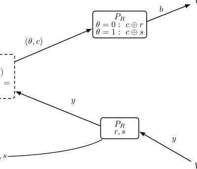
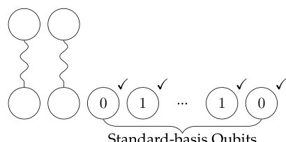
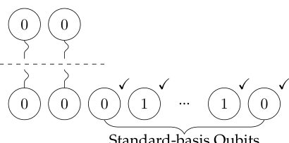
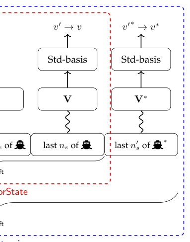
Summary. This paper advances quantum cryptography by proposing 'quantum localization' and 'trajectory verification' to overcome security flaws in existing position verification schemes. It constructs protocols using quantum anchor states to verifiably track quantum information through space and time. This work establishes stronger theoretical foundations for position-based cryptography by localizing both quantum states and computational functions.
Why it may be interesting. While highly abstract, the concepts of localizing quantum information and computational capabilities in space and time provide novel theoretical tools for understanding the physical constraints on quantum information processing and security.
Main problem. Existing quantum position verification security definitions are insufficient because they fail to prevent distributed adversarial simulation across space and time.
Main result. The authors introduce and construct protocols for 'quantum localization' and 'trajectory verification,' providing stronger foundations for position-based cryptography.
Method. The work develops protocols using 'quantum anchor states' and generalizes concepts from unclonable cryptography to track quantum information through spacetime.
Model / system. The framework relies on quantum information theory, specifically utilizing bipartite entangled states and the concept of tracking quantum states or computations across a specified spacetime trajectory.
Key observables. Fidelity of the joint state between anchor and vessel registers, and the success probability ($\eta$) of the extraction process.
Important parameters / regimes. The security proofs are established in the classical oracle (ideal obfuscation) model, which is heuristically instantiated using post-quantum indistinguishability obfuscation.
Assumptions / limitations. The security proofs rely on the existence of one-way functions and the ideal obfuscation model.
Figures summary. Figure 2 illustrates a non-localizability attack on the f-BB84 protocol involving three provers, demonstrating how entanglement can be nonlocally distributed.
Paper structure. The paper progresses from defining the weakness in existing QPV to introducing stronger notions (quantum, state, functionality localization). It then constructs protocols for trajectory verification, details the mathematical machinery using quantum anchor states, and concludes by addressing public verifiability.
While quantum position verification aims to certify a prover's location using quantum information, existing security definitions only guarantee that part of the successful adversarial party is in the claimed location. This leaves open the possibility that a distributed team of adversaries can jointly simulate a prover in a way that defeats the intended meaning of ``being at a location'' in position-based cryptography. We introduce stronger notions of position verification that we call quantum localization, which requires that there is a specified, unclonable state at the verified spacetime point -- and that this state can be found nowhere else. We show that quantum localization leads naturally to a meaningful notion of trajectory verification, in which quantum information is verifiably tracked through space and time. We construct quantum localization and trajectory verification protocols using quantum anchor states, which generalize coset states from unclonable cryptography. The security of our schemes is proven in the classical oracle (i.e. ideal obfuscation) model, which can be heuristically instantiated in the plain model using post-quantum indistinguishability obfuscation. We also introduce and instantiate the concept of functionality localization, which guarantees that the adversary has the ability to compute a secret function at the verified spacetime point, and this function cannot be computed anywhere else. This raises the intriguing possibility of localizing computational capabilities in space and time. More broadly, we believe our notions of quantum localization and our feasibility results provide stronger foundations for position-based cryptography.
Authors: Claire Mesny, Fabrice Guillemin, Claire Goursaud
Type: theory · Category: quantum information and computing · PDF: https://arxiv.org/pdf/2605.31493v1
Analysis basis: full PDF text, analyzed in chunks
Topic relevance: entanglement & information structure 2/5 · correlated / nonlocal dissipation 1/5
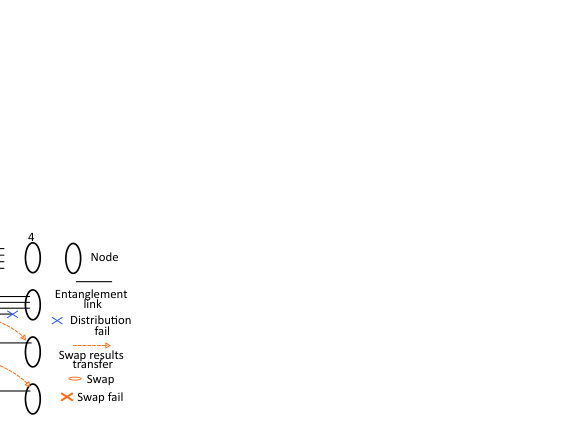
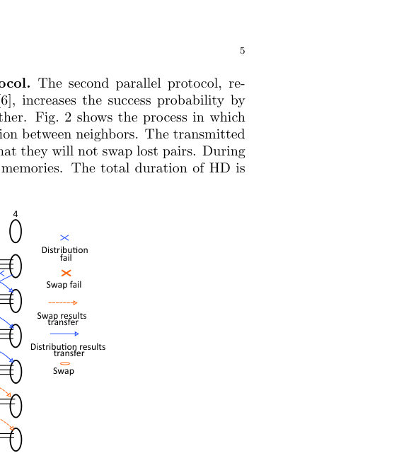
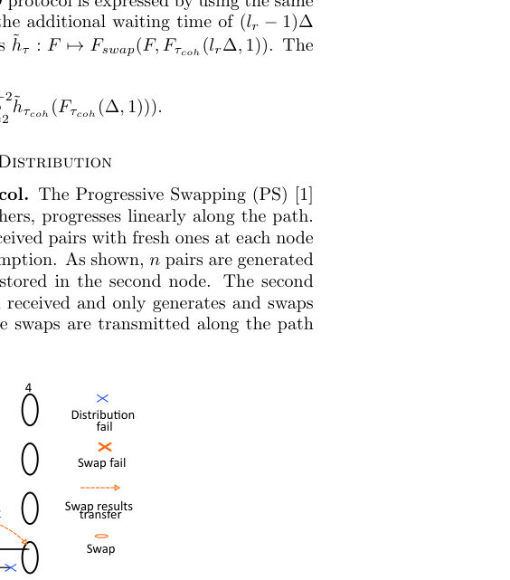
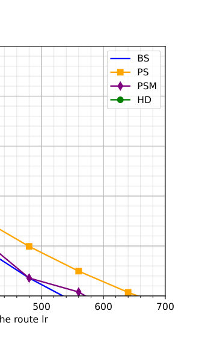
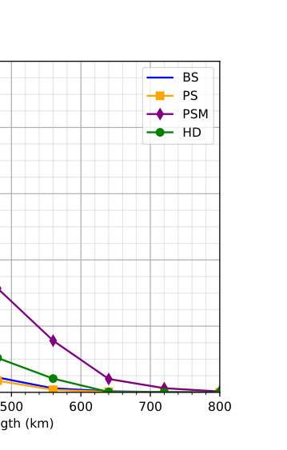
Summary. This paper introduces the Progressive Swapping to the Middle (PSM) protocol for quantum networks to improve long-distance qubit transmission. By comparing PSM against other established protocols, the authors demonstrate that PSM offers superior resource efficiency and link probability while maintaining high fidelity, especially when quantum memories are imperfect. This advances the practical feasibility of quantum networking.
Why it may be interesting. This work directly tackles the scalability and resource limitations of quantum communication networks, which is a core area of quantum information theory relevant to quantum optics and open quantum systems.
Main problem. The paper addresses the challenge of efficiently transferring quantum bits (qubits) over long distances in quantum networks by optimizing entanglement distribution and swapping protocols.
Main result. The proposed Progressive Swapping to the Middle (PSM) protocol is shown to be highly resource-efficient, yielding better link probabilities and lower resource consumption compared to existing protocols like PS and BS, especially under imperfect memory conditions.
Method. The authors compare PSM against several established protocols (PS, BS, HD) by calculating key performance metrics like link probability, link fidelity, and minimum required resource consumption.
Model / system. The system modeled is a quantum network utilizing entangled photon pairs distributed over links, requiring Bell state measurements and teleportation for end-to-end qubit transfer. The analysis incorporates decoherence from imperfect quantum memories and fiber loss.
Key observables. Link probability (success rate), Link Fidelity ($F$), and Resource Consumption (minimum number of generated pairs required).
Important parameters / regimes. Memory decay time ($ au$), time-slot ($\Delta$), and the swap success probability ($p_{swap} \approx 0.9$).
Assumptions / limitations. The analysis assumes exponential decay for memory and fiber loss, and compares protocols based on metrics derived for imperfect quantum memories.
Figures summary. Figures compare performance metrics (fidelity, success probability, resource consumption) of PSM against other protocols (BS, HD, PS) as a function of increasing route length ($l_r$ or $L$).
Paper structure. The paper introduces the PSM protocol, derives its performance metrics, and systematically compares it against parallel (BS, HD) and sequential (PS) protocols using quantitative analysis of link fidelity, success probability, and resource cost.
The distribution of entangled pairs of photons on the links composing a quantum network, combined with Bell state measurements and teleportation, is the basic apparatus to transfer quantum bits (qubits) over long distances. Entanglement distribution establishes an end-to-end entangled pair while consuming intermediate pairs on links and holding them for a certain time period. The technical literature identifies two main kinds of protocols, parallel and sequential ones, the latter having an advantage in resource consumption over the former. In this paper, we introduce an efficient swapping protocol called Progressive Swapping to the Middle (PSM) as it combines the existing Progressive Swapping (PS) protocol from both extremities of a path that meet in the middle where the received pairs are swapped. We compare PSM with two parallel protocols and PS; in our evaluation, we take into account imperfect memories and fidelity degradation. We demonstrate that PSM yields a much better link probability than PS while keeping a reasonable link fidelity, and shows an advantage in resource consumption over other protocols.
Authors: Claire Mesny, Fabrice Guillemin, Claire Goursaud
Type: theory · Category: quantum information and computing · PDF: https://arxiv.org/pdf/2605.31347v1
Analysis basis: full PDF text, analyzed in chunks
Topic relevance: entanglement & information structure 2/5 · correlated / nonlocal dissipation 1/5
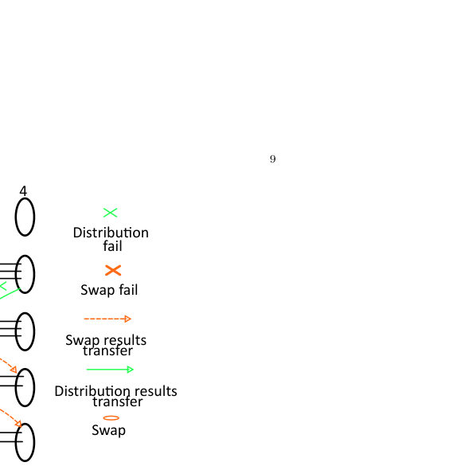
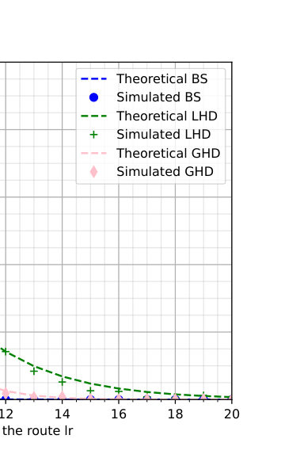
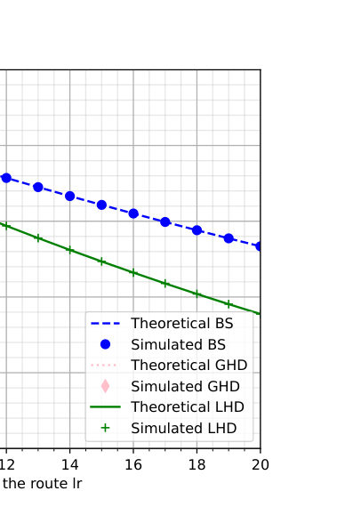
Summary. This paper proposes and analyzes the Locally Heralded Distribution (LHD) protocol for generating long-distance entanglement over quantum repeaters. By incorporating realistic noise models for quantum memory and fiber loss, the authors demonstrate that LHD significantly improves upon existing protocols like Blind Swapping, making it a more viable candidate for future quantum internet infrastructure.
Why it may be interesting. The explicit modeling of combined fiber loss and memory decoherence, alongside the comparative analysis of repeater protocols, provides crucial theoretical benchmarks for building quantum networks.
Main problem. The paper addresses the challenge of establishing long-distance quantum entanglement necessary for a quantum Internet, specifically accounting for photon fragility and imperfect quantum memory.
Main result. The proposed Locally Heralded Distribution (LHD) protocol is shown to outperform previous methods (Blind Swapping and Globally Heralded Distribution) by achieving higher link success probabilities.
Method. The authors develop and compare several entanglement distribution protocols (BS, GHD, LHD) by deriving formulas for link success probability and end-to-end fidelity under realistic noise models.
Model / system. The model involves distributing entangled photon pairs over segmented links connected by repeater nodes, utilizing quantum memories whose fidelity and loss are explicitly modeled over time.
Key observables. End-to-end entanglement fidelity, link success probability, and the comparison between different protocol performance metrics.
Important parameters / regimes. Memory lifetime ($ au$), coherence time ($ au_{coh}$), fiber attenuation ($\alpha$), and the number of links ($l_r$).
Assumptions / limitations. The analysis incorporates both fiber-induced and memory-induced decoherence, and assumes deterministic write-in/read-out operations for quantum memories.
Figures summary. Figures illustrate the path schemes and compare link probabilities (BS, LHD, GHD) and link fidelities as a function of increasing route length ($l_r$).
Paper structure. The paper introduces the problem, details the physical models for decoherence and loss, develops the LHD protocol, and concludes by benchmarking LHD against established protocols using simulation results.
The rapid development of quantum computers and sensors urges for the development of a quantum Internet capable of transmitting quantum bits over long distances. Photons used for quantum data transfer are fragile over time and sensitive to their environment, so that they cannot be directly used over long distances. To remedy this problem, long distance paths are segmented into shorter links and entangled pairs of photons are distributed over these links and swapped to create end-to-end entangled pairs over long distances, eventually used for teleportation. In this paper, we develop an existing protocol taking account of fidelity and imperfect memories. We shorten the execution time and thus increase its link success probability creating the so-called Locally Heralded Distribution (LHD). It turns out that the proposed protocol outperforms some previous protocols. We benchmark through simulation the performances of protocols considered in this paper by using a blind entanglement protocol as a baseline.
Authors: Anant Agnihotri, Michael Krebsbach, Florentin Reiter, Thomas Wellens
Type: both · Category: quantum information and computing · PDF: https://arxiv.org/pdf/2605.31449v1
Analysis basis: full PDF text, analyzed in chunks
Topic relevance: quantum measurements 2/5 · entanglement & information structure 1/5
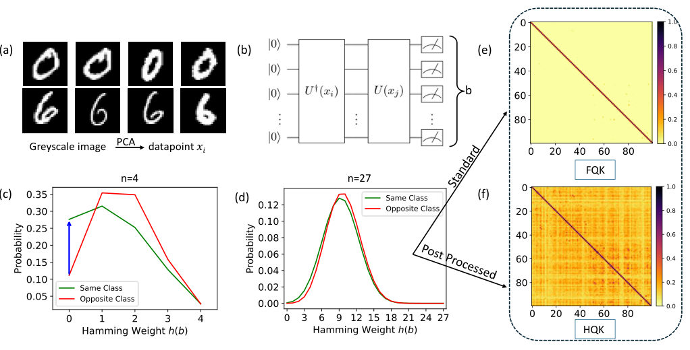
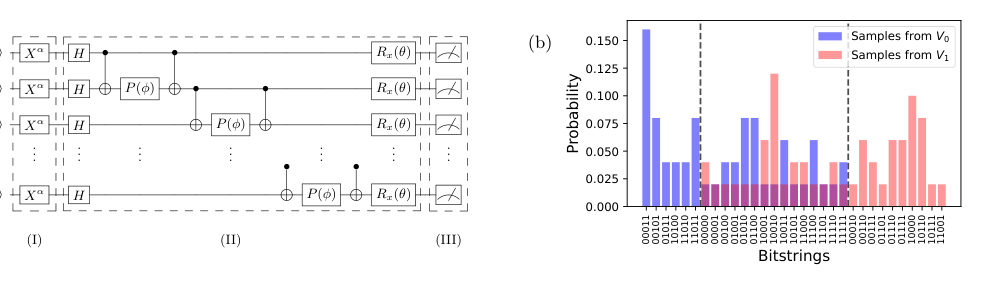
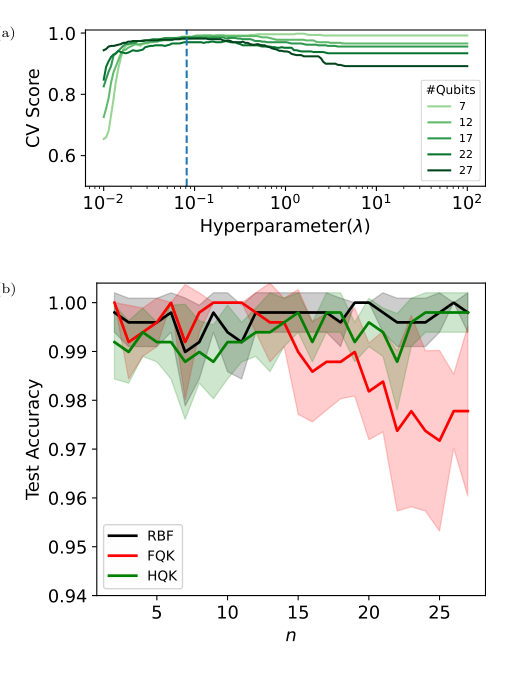
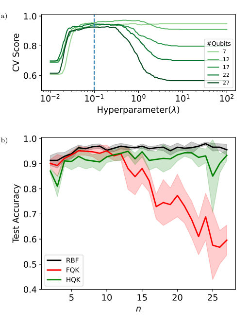
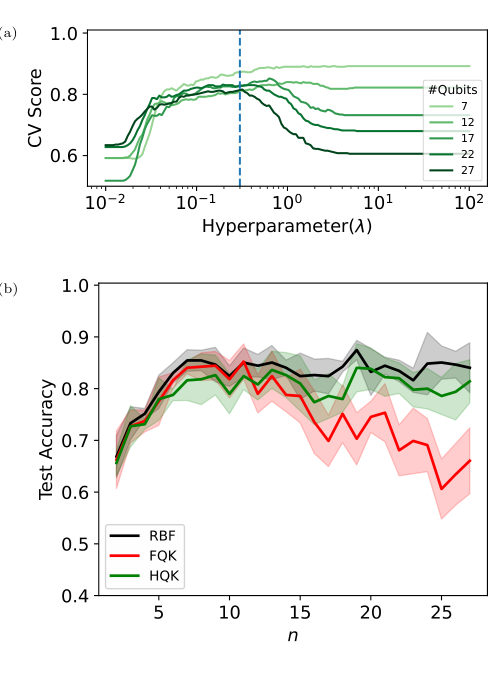
Summary. This paper introduces the Hamming quantum kernel (HQK) to overcome the exponential concentration problem plaguing standard quantum kernels in Support Vector Machines. By utilizing the full measurement statistics weighted by Hamming weight, the HQK maintains high classification accuracy even as the number of qubits increases significantly. This demonstrates a scalable and robust method for quantum feature mapping.
Why it may be interesting. While the focus is on machine learning kernels, the underlying challenge—extracting robust, scalable information from quantum measurements—is central to quantum information processing and quantum characterization.
Main problem. The standard fidelity quantum kernel suffers from exponential concentration when scaling to large quantum systems, limiting its practical use in Support Vector Machines (QSVMs).
Main result. The proposed Hamming quantum kernel (HQK) successfully mitigates this concentration issue, showing superior and stable performance compared to the standard fidelity kernel and classical kernels for systems with 15 or more qubits.
Method. The HQK is a classical post-processing method that utilizes the full measurement statistics of quantum circuits, weighted by the Hamming weight, rather than relying on a single fidelity value.
Model / system. The work uses QSVMs trained on two types of data: classical MNIST digits (reduced via PCA) and synthetic data generated from quantum circuits. The core model involves comparing the performance of three kernels: RBF (classical), FQK, and HQK.
Key observables. Test accuracy, kernel matrix values, and the theoretical distinguishability $D(P_0, P_1)$.
Important parameters / regimes. Number of qubits ($n$, ranging from 2 to 27), the HQK weighting parameter ($\lambda$), and the RBF bandwidth ($\gamma$).
Assumptions / limitations. The HQK assumes that similar data points lead to measurable shifts in the Hamming distributions, and the analysis relies on the ability to perform full measurement statistics.
Figures summary. Figures compare test accuracy vs. dimensionality ($n$) for MNIST and quantum data, consistently showing HQK outperforming FQK and RBF at large $n$. One figure illustrates the concentration issue in FQK versus the informative kernel from HQK.
Paper structure. The paper introduces the problem of FQK concentration, details the HQK formulation using full measurement statistics, and then evaluates the method by comparing its performance against RBF and FQK across multiple classification tasks (MNIST, synthetic quantum data) as the system size increases.
Quantum support vector machines are classification algorithms that rely on quantum-generated kernels. The fidelity quantum kernel commonly used in quantum support vector machines suffers from exponential concentration as system size increases, preventing an efficient scaling beyond fewqubit systems. We introduce the Hamming quantum kernel, a classical post-processing method that is based on the same measurement outcomes as the fidelity quantum kernel. However, it avoids the exponential concentration problem by using the full measurement statistics rather than a single fidelity value. We evaluate the approach on both classical data (MNIST) and synthetic data generated from quantum circuits, using systems ranging from 2 to 27 qubits. Throughout the simulations, the Hamming quantum kernel outperforms the fidelity quantum kernel whenever 15 or more qubits are used. Furthermore, for synthetic quantum data, our method consistently outperforms the classical Gaussian kernel. This demonstrates that the Hamming quantum kernel improves the expressivity and robustness at larger qubit scales without requiring any additional quantum ressources.
Authors: Kristin Sundal Lien, Marco Túlio Quintino
Type: theory · Category: quantum information and computing · PDF: https://arxiv.org/pdf/2605.31519v1
Analysis basis: full PDF text, analyzed in chunks
Topic relevance: entanglement & information structure 2/5
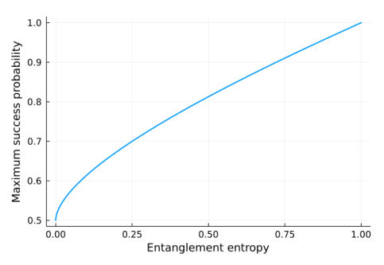
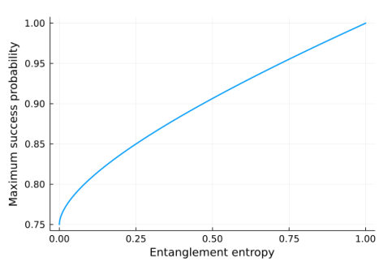
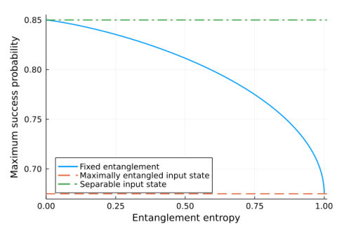
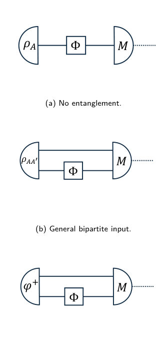
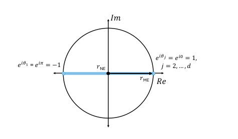
Summary. This work explores the limits of entanglement in quantum channel discrimination, proving that entanglement is not always beneficial. By introducing the MEWC/MEBC framework, the authors demonstrate that for certain channel pairs, using maximally entangled states actively reduces the maximum achievable success probability compared to using separable input states.
Why it may be interesting. It provides a rigorous theoretical framework for understanding when entanglement, typically viewed as a resource, fails to provide an advantage in quantum information tasks, which is crucial for designing practical quantum protocols.
Main problem. The paper investigates quantum channel discrimination, specifically identifying scenarios where the use of maximally entangled input states is suboptimal or actively detrimental to the discrimination success probability.
Main result. It establishes that for certain pairs of channels (MEWC pairs), the optimal input state must be separable, and excessive entanglement can significantly reduce the maximum achievable discrimination probability.
Method. The analysis employs concepts like the Diamond Norm ($\|\cdot\|_\diamond$) and the ME-norm ($\|\cdot\|_{ME}$), introducing the Maximal Entanglement Worst Case (MEWC) and Best Case (MEBC) classifications to systematically characterize the role of entanglement.
Model / system. The study models the task of distinguishing between two or more quantum channels ($\Phi_i$), using the Choi-Jamiołkowski isomorphism to translate the problem into analyzing the difference map $\Delta\Phi$. The analysis compares performance using separable vs. maximally entangled input states.
Key observables. Success probability of discrimination ($P^*_s$), the M-operator ($M(\Delta\Phi)$), and the relationship between the diamond norm and the ME-norm.
Important parameters / regimes. The entanglement entropy of the input state, the dimension of the Hilbert space ($d$), and the structure of the difference map $\Delta\Phi$.
Assumptions / limitations. The analysis often focuses on the uniform prior probability case and compares the optimal strategy (using the diamond norm) against the maximally entangled strategy (using the ME-norm).
Figures summary. Figures illustrate the success probability for discriminating Pauli channels, showing an increase with entanglement, but also show cases where the probability decreases with increasing entanglement, favoring separable states.
Paper structure. The paper develops from general channel discrimination theory, introduces the MEWC/MEBC concepts, derives mathematical bounds relating different norms, and applies these concepts to specific examples like Pauli and measurement channels to prove when entanglement is detrimental.
Entanglement is known to be a powerful resource that improves performance in various quantum information and computational tasks. A standard example of such a phenomenon is the possibility of perfectly discriminating all four Pauli operations in a single shot via the superdense coding protocol. While entanglement is often a powerful resource for quantum channel discrimination, this is not necessarily the case. In this work, we identify scenarios in which the maximally entangled state is a bad choice of input state and, more generally, show that excessive entanglement can reduce channel discriminability dramatically. To do so, we present an explicit pair of unitary channels which are perfectly discriminable without entanglement, but for which any strategy with maximally entangled input states is $ε$-close to a blind uniform guessing strategy. To develop a systematic approach, we introduce the concepts of Maximal Entanglement Worst Case (MEWC) and Maximal Entanglement Best Case (MEBC) pairs of channels, and present conditions for a pair of channels to be MEWC or MEBC. With these conditions, we show that the optimal input states for discriminating MEWC pairs of channels are necessarily separable, and provide non-trivial examples of measurement channels for which entanglement necessarily reduces the maximum probability of discrimination.
Authors: Alexander Felski
Type: theory · Category: other · PDF: https://arxiv.org/pdf/2605.30978v1
Analysis basis: full PDF text, analyzed in chunks
Topic relevance: Frenkel-Kontorova 1/5 · analog quantum simulation 1/5 · driven-dissipative phase transition 1/5 · methods for driven-dissipative 1/5 · non-equilibrium dynamics 1/5




Summary. This work investigates spectral features in non-Hermitian quantum systems, specifically challenging the notion that complex quasimomenta and generalized Brillouin zones always imply the non-Hermitian skin effect. By analyzing the SSH* model, the authors prove that these complex features can instead originate from parity-induced even-odd effects inherent to finite chain lengths, even when the system remains fundamentally delocalized.
Why it may be interesting. It provides a crucial theoretical distinction between two superficially similar phenomena—spectral sensitivity due to finite-size parity effects versus the true non-Hermitian skin effect—which is vital for interpreting experimental measurements in open quantum systems.
Main problem. To demonstrate that spectral sensitivity and the formation of a generalized Brillouin zone (GBZ) can occur in non-Hermitian systems due to parity-induced even-odd effects, even when the conventional non-Hermitian skin effect (NHSE) is absent.
Main result. The study shows that the complex quasimomentum structure and GBZ deviation can arise purely from finite-size parity effects in the SSH* model, independent of the NHSE, while wavefunctions remain delocalized.
Method. The analysis employs the generalized Brillouin zone formalism, analyzing the Hamiltonian's spectrum for finite chains of odd and even lengths using symmetry classification (Altland-Zirnbauer classes).
Model / system. The primary model is the SSH* tight-binding Hamiltonian, which is a non-Hermitian generalization of the Su-Schrieffer-Heeger model, studied on finite chains of length N.
Key observables. Eigenvalue spectra, generalized Brillouin zone structure, Inverse Participation Ratio (IPR), and the comparison between open vs. periodic boundary conditions.
Important parameters / regimes. Chain length N (odd vs. even), the coupling strengths t and delta, and the thermodynamic limit (N -> infinity).
Assumptions / limitations. The analysis relies on constructing specific compound states to satisfy eigenvalue relations and distinguishing between parity-induced effects and the true NHSE.
Figures summary. Figures illustrate eigenvalue spectra comparing periodic and open boundary conditions for both the Hatano-Nelson model (showing NHSE) and the SSH* model (showing parity-induced GBZ deviations).
Paper structure. The paper systematically contrasts systems exhibiting NHSE with the SSH* model, deriving the GBZ for finite chains, and finally separating the observed spectral sensitivity into contributions from parity effects versus the NHSE.
Acute spectral sensitivity to boundary conditions and the formation of a generalized Brillouin zone associated with complex quasimomenta are features frequently attributed to systems with non-trivial non-Hermitian topology, showcasing the non-Hermitian skin effect. We show that, away from the thermodynamic limit, these features themselves are not uniquely tied to this phenomenon; they can similarly arise as parity-induced even-odd effects in non-Hermitian systems without skin effect. Despite an underlying generalized Brillouin zone description, wavefunctions remain delocalized. In addition, the effect can arise in skin-effect models as entirely separate distinguishable feature
Authors: Dipayan Chakraborty, Priyabrata Char, Indrani Chattopadhyay, Debasis Sarkar
Type: theory · Category: other · PDF: https://arxiv.org/pdf/2605.30588v1
Analysis basis: full PDF text, analyzed in chunks
Topic relevance: correlated / nonlocal dissipation 1/5 · driven-dissipative phase transition 1/5 · entanglement & information structure 1/5 · methods for driven-dissipative 1/5 · non-equilibrium dynamics 1/5
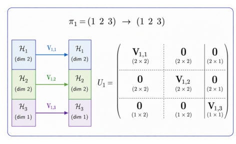
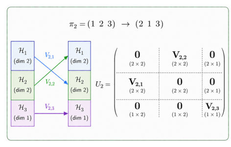
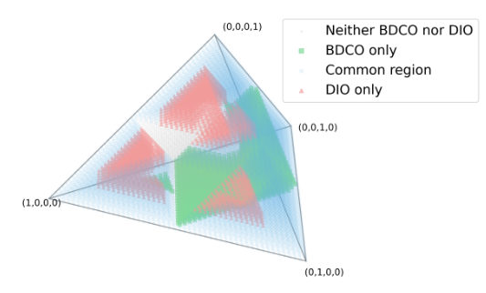
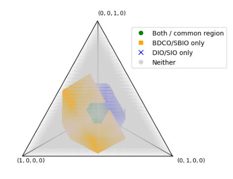

Summary. This paper develops a resource theory framework for 'block coherence' by analyzing pure state transformations under three generalized incoherent operations: PBIO, SBIO, and BDCO. It proves that for SBIO and BDCO, the ability to transform one pure state to another is mathematically equivalent to a majorization condition on their respective block probability vectors. This advances the understanding of how coherence resources constrain quantum operations.
Why it may be interesting. This work provides a rigorous mathematical framework for quantifying and characterizing quantum resources (block coherence) by establishing precise, necessary, and sufficient conditions for state transformations under generalized incoherent dynamics.
Main problem. The paper investigates the necessary and sufficient conditions for deterministically transforming one pure quantum state to another using specific types of incoherent quantum operations.
Main result. For Strictly Block Incoherent Operations (SBIO) and Block Dephasing Covariant Operations (BDCO), pure state conversion is completely characterized by the majorization relation between the input and output block probability vectors.
Method. The authors employ resource theory concepts, utilizing majorization relations and constructing explicit Kraus representations to prove the equivalence between the physical process and the mathematical ordering condition.
Model / system. The system is a quantum state $|\psi angle$ defined on a Hilbert space $H$ with a fixed orthogonal decomposition $H = \sum_{\alpha} H_\alpha$. The operations studied are PBIO, SBIO, and BDCO, which generalize standard coherence models.
Key observables. Block probability vectors ($ ilde{p}$ and $ ilde{q}$), and the resulting state transformation $|\psi angle o |\phi angle$.
Important parameters / regimes. The nondegeneracy condition for PBIO, and the block structure defined by the orthogonal decomposition.
Assumptions / limitations. The analysis assumes a fixed orthogonal decomposition of the Hilbert space and relies on establishing necessary and sufficient conditions for the transformation.
Figures summary. Figures schematically illustrate the structure of block incoherent unitaries and compare the achievable state transformation regions under DIO versus BDCO.
Paper structure. The paper systematically analyzes the conversion criteria for PBIO, then establishes the majorization criterion for BDCO and SBIO, proving equivalence and constructing the required Kraus operators for the converse direction.
Block coherence provides a natural generalization of standard quantum coherence by treating superpositions across different subspaces as a resource. This work studies deterministic pure-state conversion under three free operations: physically block incoherent operations (PBIO), strictly block incoherent operations (SBIO), and block dephasing covariant incoherent operations (BDCO). For PBIO, we prove that, under a natural nondegeneracy condition on the active Kraus branches, any deterministic conversion from one pure state to another must be implemented by a block incoherent unitary. When the nondegeneracy requirement is removed, the condition becomes more general. It demands that the blockwise action of every active branch reproduce the target block structure with a common proportionality factor across all output blocks. For SBIO and BDCO, we show that deterministic pure-state transformation is completely characterized by the majorization relation between the input and output block probability vectors. The converse proof is constructive, yielding an explicit Kraus representation for every admissible BDCO transformation. In the rank-one limit, these conditions reduce to the known pure-state transformation criteria for physically incoherent operations (PIO), strictly incoherent operations (SIO), and dephasing covariant incoherent operations (DIO) in the standard resource theory of coherence. Using the majorization condition, a maximally block-coherent state with uniform block weights is also identified as a universal pure-state resource under BDCO and SBIO. We have also provided geometric numerical illustrations comparing the state transformation power of BDCO and DIO for a fixed input state, fixed output state and mutual convertibility scenarios.
Authors: Konstantin Gaul
Type: theory · Category: strongly correlated electrons · PDF: https://arxiv.org/pdf/2605.31203v1
Analysis basis: full PDF text, analyzed in chunks
Topic relevance: Keldysh / 2PI / non-Gaussian methods 1/5 · analog quantum simulation 1/5 · exotic spin models in light-matter 1/5 · spintronics-quantum-optics interface 1/5
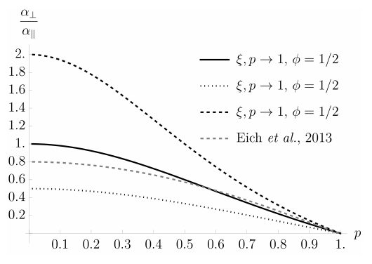
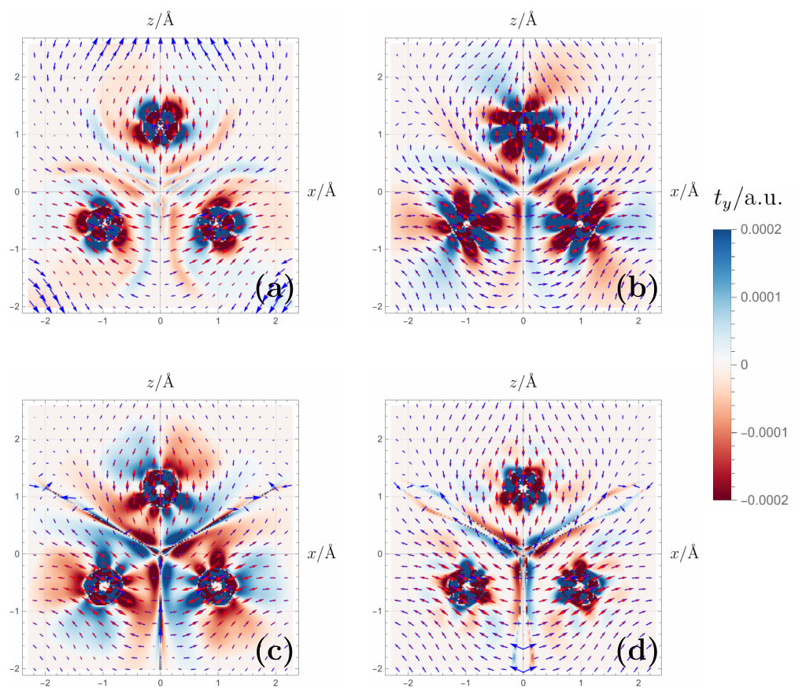
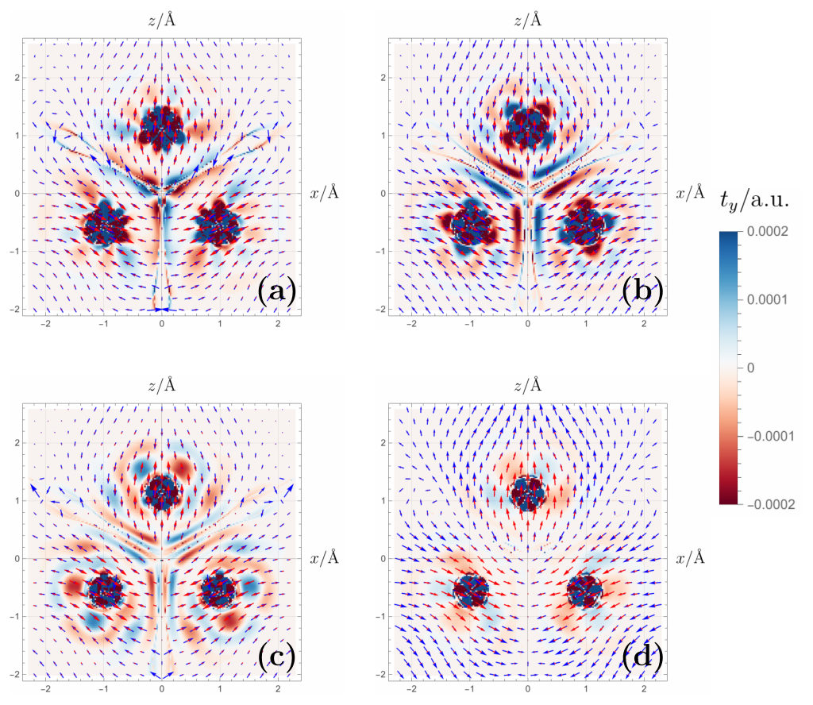
Summary. This work develops a rigorous, first-principles method to generalize standard collinear exchange-correlation functionals to the noncollinear regime required for accurate DFT in magnetically frustrated systems. By employing $SU(2)$ rotations in a $u(2)$ matrix framework, the authors provide a mathematically consistent way to calculate magnetic properties like local torques and hyperfine couplings. This advances the theoretical tools available for studying strongly correlated magnetic materials.
Why it may be interesting. While focused on solid-state magnetism, the rigorous mathematical framework for handling non-collinearity via group theory ($SU(2)$) and gradient expansions is highly relevant to any theoretical work involving complex, symmetry-broken quantum states or spin dynamics.
Main problem. The paper addresses the lack of a rigorous, first-principles connection between established semilocal collinear exchange-correlation (XC) functionals and their necessary noncollinear generalizations required for accurate DFT calculations in magnetically complex materials.
Main result. A locally exact relationship between collinear and noncollinear XC functionals is derived using a $u(2)$ matrix representation and implemented via numerically robust $SU(2)$ rotations.
Method. The authors derive the relationship by expanding the energy functional using a gradient expansion formalism in the $u(2)$ space, transforming collinear derivatives to noncollinear space via unitary rotations.
Model / system. The theory is applied to noncollinear magnetism, which is crucial when spin-orbit coupling or geometric frustration is present. Demonstrations include calculating local magnetic torques in the $ ext{Cr}_3$ cluster and hyperfine couplings in Uranium.
Key observables. Local magnetic torque structure, hyperfine coupling constants ($A$), and magnetic moments ($\langle \hat{S}^2 angle$).
Important parameters / regimes. The degree of noncollinearity, the ratio of transverse to longitudinal magnetization gradients ($\alpha_{\perp}/\alpha_{\parallel}$), and the small deviation parameter $\epsilon$ for regularization.
Assumptions / limitations. The primary approximation is that the exact noncollinear functional can be represented in a locally collinear parameterization, which is only strictly true if certain coefficient tensors commute with gradient variables.
Figures summary. Figures compare the local magnetic torque structure for $ ext{Cr}_3$ using various noncollinear approximations (NC-SU(2), SF, etc.) and different XC functionals (BLYP, OLYP, KT3). Table II compares calculated hyperfine coupling constants for U and $ ext{U}^+$ across multiple methods.
Paper structure. The paper builds from establishing the mathematical framework (using $u(2)$ representation and $SU(2)$ rotations) to deriving the energy-invariant relationship, applying this formalism to calculate local magnetic torques in $ ext{Cr}_3$, and finally extending the methodology to calculate relativistic properties like hyperfine couplings in Uranium.
In the presence of spin-orbit coupling and in geometrically frustrated materials, a noncollinear treatment the magnetization density is essential. However, in density functional theory most exchange--correlation functional approximations were originally developed for locally collinear magnetization. Many practical approaches to noncollinear DFT have emerged over the past decade. However, a first-principles connection between widely used semilocal collinear functionals and their noncollinear generalizations remains lacking. In this work, a locally exact relation between collinear and noncollinear exchange--correlation functionals is derived at the level of gradient expansions within a $u(2)$ matrix representation of the energy functional. Within this framework, collinear semilocal variables naturally acquire distinct dependencies on transverse and longitudinal magnetization gradient components. The widely used Scalmani--Frisch scheme emerges as a first-order approximation. The transformation of collinear functional derivatives to noncollinear space is implemented through numerically robust $SU(2)$ rotations. A consistent description of local magnetic torques is demonstrated for the prototypical spin-frustrated Cr$_3$ cluster. The approach further extends to fully nonlocal functionals and provides a direct route towards numerically stable relativistic response calculations. The influence on magnetic properties in presence of spin-orbit coupling is illustrated through calculations of hyperfine couplings in the high-spin ground states of uranium and the uranium ion.
Authors: Anirban Ghosh, Sanjib Sabhapandit
Type: theory · Category: statistical mechanics · PDF: https://arxiv.org/pdf/2605.31207v1
Analysis basis: full PDF text, analyzed in chunks
Topic relevance: driven-dissipative phase transition 1/5 · non-equilibrium dynamics 1/5 · non-equilibrium universality 1/5
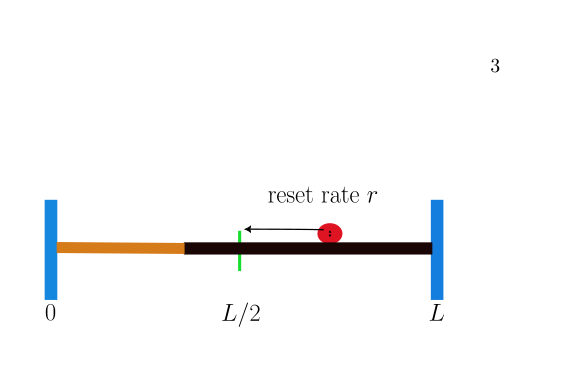
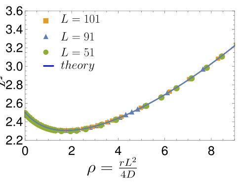
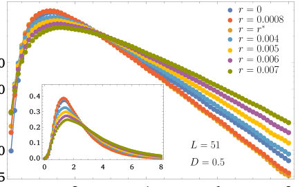
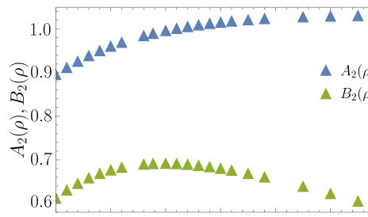

Summary. This work analyzes how stochastic resetting modifies the time required for a Brownian particle to explore an entire confined space (the cover time). The authors find that there is an optimal resetting rate that minimizes this search time, providing a quantitative tool for optimizing exploration processes in confined physical systems.
Why it may be interesting. The concept of optimizing search times via external driving (resetting) is highly relevant to open quantum systems, particularly in quantum computation or quantum sensing where initialization or measurement resets are common.
Main problem. The paper investigates how stochastic resetting affects the statistics of the cover time for a one-dimensional Brownian motion confined to a finite interval.
Main result. The mean cover time exhibits a non-monotonic dependence on the scaled reset rate, achieving a minimum at an optimal rate $\rho^*$, demonstrating that resetting can efficiently optimize search processes.
Method. The analysis involves deriving exact analytical expressions for the cover time distribution and its moments using Laplace transforms and residue calculus.
Model / system. The system is a single Brownian particle undergoing diffusion on the line segment $[0, L]$ with reflecting boundaries. The dynamics are modified by introducing stochastic resetting to the center of the interval at a constant rate $r$.
Key observables. Cover time ($ ext{t}_c$), mean cover time $\langle ext{t}_c angle$, and the probability density function (PDF) of $ ext{t}_c$.
Important parameters / regimes. Diffusion constant $D$, interval length $L$, and the scaled reset rate $\rho = rL^2/4D$.
Assumptions / limitations. The resetting process is modeled as Poissonian, and the mathematical derivations rely heavily on Laplace transforms and residue calculus for solving the associated renewal equations.
Figures summary. Figure 2 shows the scaled mean cover time decreasing, reaching a minimum at $\rho^*$, and then increasing with the scaled resetting rate $\rho$.
Paper structure. The paper first establishes the non-resetting case, then introduces the stochastic resetting mechanism, and finally derives the full cover time distribution and its asymptotic limits using advanced mathematical techniques.
We investigate the effect of stochastic resetting on the statistics of the cover time of a one-dimensional Brownian motion with a diffusion constant $D$, confined to a finite interval of length $L$. The cover time $t_c$, defined as the minimum time required for the particle to visit every point of the interval at least once, exhibits a non-monotonic dependence on the scaled reset rate $ρ= rL^2/4D$. The scaled mean cover time $4D\langle t_c\rangle/L^2$ initially decreases with increasing $ρ$, attains a minimum at an optimal value $ρ^*$, and then increases with $ρ$, indicating an optimal resetting rate that minimizes the search duration. Furthermore, we derive an exact analytical expression for the cover time distribution, including its asymptotic limits, which agree well with numerical simulations. These results demonstrate that stochastic resetting serves as an efficient mechanism for optimizing cover-time processes in confined geometries.
Authors: Konrad Tschernig, Florian H. Huber, Janik Wolters, Jasmin Meinecke
Type: theory · Category: other · PDF: https://arxiv.org/pdf/2605.31074v1
Analysis basis: full PDF text, analyzed in chunks
Topic relevance: analog quantum simulation 1/5 · interference shaping light 1/5 · methods for driven-dissipative 1/5
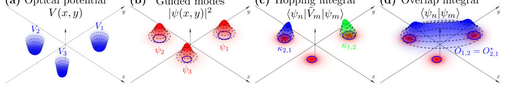
Summary. This paper addresses the failure of the standard tight-binding model for coupled optical waveguides when mode overlap is significant. The authors propose using Löwdin orthogonalization to generate an orthonormal basis, which corrects the Hamiltonian and restores the model's accuracy. This improved Löwdin-TB method accurately predicts complex coupling effects, such as negative next-nearest-neighbor hopping phases, previously missed by standard approximations.
Why it may be interesting. This work provides a rigorous mathematical tool (Löwdin orthogonalization) to correct a fundamental approximation in coupled-mode theory, which is essential for accurately modeling light-matter or light-waveguide interactions in complex photonic structures.
Main problem. The standard tight-binding approximation for light propagation in waveguide arrays fails when waveguides are closely spaced because the underlying assumption of mode orthogonality breaks down.
Main result. The proposed Löwdin-TB method successfully restores the standard eigenvalue problem and accurately reproduces exact beam propagation simulations, capturing crucial physical effects like negative next-nearest-neighbor coupling.
Method. The authors introduce a modified tight-binding framework using Löwdin orthogonalization to construct an orthonormal basis from the non-orthogonal guided modes.
Model / system. The system is a linear array of coupled single-mode optical waveguides, whose dynamics are governed by the paraxial wave equation. The model is analyzed using a tight-binding Hamiltonian approach.
Key observables. Fidelity (comparison to BPM), Spectral Distance (S), Completeness Distance (C), and Frobenius Distance (F) are used to quantify the accuracy of the approximation.
Important parameters / regimes. Waveguide separation distance ($d$), number of waveguides ($M$), and the overlap matrix elements ($\langle\psi_n|\psi_m angle$).
Assumptions / limitations. The standard TB method assumes guided modes are mutually orthogonal, which is the primary flawed assumption addressed by the work.
Figures summary. Figures illustrate the breakdown of standard TB fidelity versus BPM for increasing waveguide count, and plot the modified Hamiltonian elements ($H_{n,m}$) showing the emergence of negative NNN coupling phases in the Löwdin approach.
Paper structure. The paper first establishes the failure of standard TB due to non-orthogonality, then introduces the Löwdin orthogonalization procedure, and finally validates the new method by comparing its results against exact beam propagation simulations using multiple quantitative error metrics.
Many advancements in optics have relied on the tight-binding approximation, which simplifies the description and prediction of complex system behaviors. This approximation describes the dynamics of the total light field by examining the coupling between the guided modes of individual single-mode substructures -- also known as coupled mode theory. However, the underlying assumption, that the guided modes of individual waveguides form an orthogonal basis, breaks down when waveguides are brought into close proximity or when larger arrays are considered. In this work, we systematically analyze the consequences of this non-orthogonality and show that it leads to a generalized eigenvalue problem involving an overlap matrix, causing a fundamental mismatch between the standard TB model and solutions of the paraxial wave equation. To resolve this issue, we introduce a modified TB framework based on the Löwdin orthogonalization, which constructs an orthonormal basis from the non-orthogonal guided modes while minimally altering their physical shape and preserving their symmetry properties. The resulting Löwdin-TB method restores the standard eigenvalue problem and yields excellent agreement with exact beam propagation simulations across a wide range of system sizes and waveguide separations. Furthermore, it captures important physical effects, such as enhanced long-range coupling and nontrivial hopping phases, that are absent in the standard approach.
Authors: Yuhan Gai, Sakura Schafer-Nameki, Alison Warman
Type: theory · Category: strongly correlated electrons · PDF: https://arxiv.org/pdf/2605.31602v1
Analysis basis: full PDF text, analyzed in chunks
Topic relevance: analog quantum simulation 1/5 · driven-dissipative phase transition 1/5 · entanglement & information structure 1/5
Summary. This theoretical work classifies 'twin condensable algebras' in 2+1D topological orders, which are generalizations of standard anyon models. By introducing the concept of twin algebras—those with the same anyon content but different algebraic structures—the authors identify new candidates for quantum phase transitions. This provides a powerful mathematical tool for distinguishing between physically distinct symmetric phases.
Why it may be interesting. The concept of distinct phases with isomorphic ground state spaces but inequivalent order parameters is highly relevant for understanding exotic quantum phases in condensed matter systems.
Main problem. The paper aims to classify and characterize 'twin condensable algebras' in 2+1 dimensional non-chiral topological orders, which go beyond simple anyon descriptions.
Main result. Twin algebras exist, representing distinct symmetric phases that share the same anyon content but possess inequivalent algebra structures, leading to phase transitions beyond Landau theory.
Method. The classification uses the framework of Symmetry Topological Field Theory (SymTFT) applied to group-theoretical topological orders, parameterizing algebras by subgroups and cocycles.
Model / system. The study focuses on symmetric gapped phases in 2+1 dimensions, analyzed using the structure of the Drinfeld center Z(Vec_omega^G) for finite group symmetries G.
Key observables. The primary observables are the condensable algebras themselves, characterized by their algebra structure, and the resulting order parameters $\mathcal{O}_a$.
Important parameters / regimes. The classification depends on parameters $(H, N, \gamma, \epsilon)$, and the existence of Gassmann triples $(G, H_1, H_2)$ is crucial for identifying twins.
Assumptions / limitations. The analysis is restricted to group-theoretical symmetries $ ext{Z}( ext{Vec}^{\omega}G)$, and the identification of twins relies on algebraic structures like Gassmann triples.
Figures summary. Figures illustrate the SymTFT for S-symmetric phases, showing the relationship between symmetry and physical boundaries, and the structure of the algebras.
Paper structure. The paper systematically defines condensable algebras, introduces the concept of twin algebras, develops classification criteria using algebraic invariants (like Gassmann triples), and demonstrates physical consequences regarding phase transitions.
Condensable algebras in 2+1d non-chiral topological orders characterize gapped boundary conditions and interfaces. Applied to the Symmetry Topological Field Theory, they allow classification of symmetric gapped phases and impose sharp constraints on possible phase transitions. A condensable algebra is specified not only by its underlying set of anyons, which end on the boundary or interface, but also by its algebra structure. We introduce the concept of twin condensable algebras, which have the same anyon decomposition, but inequivalent algebra structure. We revisit the classification of condensable algebras in $\mathcal{Z}(\text{Vec}_G^ω)$, i.e. in group-theoretical topological orders for finite groups $G$ with anomaly $ω$. In this context we are able to identify twin algebras that arise from different mechanisms, such as subgroup data, SPT cocycles, and symmetry actions. In particular, we construct infinite families of examples of twins from so-called Gassmann triples, and exhibit cases in which the reduced topological orders are inequivalent despite having identical anyon content. Physically, twin algebras describe distinct symmetric phases that have isomorphic spaces of ground states, but inequivalent order parameters. Such twin phases never exhibit relative spontaneous symmetry breaking, and can be used to construct phase transitions without hidden symmetry breaking, which are intrinsically beyond Landau transitions.
Authors: P. Opletal, J. Fikáček, E. Duverger-Nédellec, A. Thamizhavel, Z. Hossain, R. Tarasenko, V. Tkáč, D. Legut, Bin Shen, P. Gegenwart, J. Custers
Type: both · Category: strongly correlated electrons · PDF: https://arxiv.org/pdf/2605.31118v1
Analysis basis: full PDF text, analyzed in chunks
Topic relevance: analog quantum simulation 1/5 · exotic spin models in light-matter 1/5
Summary. This work investigates the complex magnetic behavior of CeRhSn2, a material with a geometrically frustrated structure. By combining detailed measurements of magnetization, specific heat, and resistivity with DFT calculations, the authors resolve conflicting reports to establish a clear sequence of magnetic transitions. They conclude that the material exhibits a ferromagnetic ground state, while attributing the large electronic specific heat coefficient to weak Kondo hybridization.
Why it may be interesting. The study provides a detailed, multi-faceted investigation into magnetic ordering in a heavy fermion material, directly addressing the interplay between crystal structure, magnetic frustration, and electronic correlations, which is central to strongly correlated electron physics.
Main problem. The paper aims to resolve conflicting reports regarding the ground state of the intermetallic compound CeRhSn2, which is complicated by a sawtooth-like arrangement of Ce sites suggesting magnetic frustration.
Main result. The study establishes three successive magnetic transitions (AFM at 3.65 K, FM at 1.7 K, and a final transition at 1.5 K) and concludes that the system possesses a ferromagnetic ground state, despite initial signs of frustration.
Method. The research combines extensive experimental measurements (magnetization, specific heat, resistivity) on high-quality single crystals with ab initio Density Functional Theory (DFT) calculations.
Model / system. The physical system is the intermetallic compound CeRhSn2, which has an orthorhombic structure and exhibits complex magnetic anisotropy due to its crystal structure and electronic interactions.
Key observables. Magnetization (M), specific heat divided by temperature (Cp/T), resistivity (rho), and magnetic transition temperatures (TN, TC).
Important parameters / regimes. Sommerfeld coefficient (gamma = 76.5 mJ/mol·K^2), magnetic anisotropy (b-axis easy axis), and critical temperatures (3.65 K, 1.7 K, 1.5 K).
Assumptions / limitations. The authors assume that the observed magnetic transitions and thermodynamic anomalies provide definitive evidence for the magnetic ground state, while acknowledging that the enhancement of gamma might be due to Kondo hybridization rather than frustration.
Figures summary. Figures illustrate the crystal structure showing two inequivalent Ce sites and the sawtooth pattern; magnetization curves show field-dependent transitions; and Cp/T vs. T plots reveal anomalies corresponding to the magnetic ordering temperatures.
Paper structure. The paper follows a structure of literature review/problem statement, detailed experimental characterization across multiple physical properties (M, Cp, rho), analysis of field and temperature dependencies to pinpoint multiple transitions, and finally, theoretical calculations to confirm the magnetic ground state.
Conflicting reports exist on the ground state of the intermetallic compound CeRhSn$_2$. This can be rooted in the sawtooth-like arrangement of two inequivalent Ce sites in the unit cell, which suggests potential geometric magnetic frustration. To resolve, we conducted a comprehensive study on high-quality single crystals of CeRhSn$_2$ by means of magnetization ($M$), specific heat ($C_p/T$), and resistivity ($ρ$). The system exhibits strong magnetic anisotropy, confirming the $b$-axis as the easy magnetic axis. We establish three successive transitions, an AFM order at $T_{N} = 3.65$K, a first-order FM order at $T_{C} = 1.7$K and final transition, at $T = 1.5$K. The transition temperatures are highly field-directional dependent: in a magnetic field, the lowest transition is immediately suppressed while $\mathbf{H} \parallel b$ rapidly merges $T_{C}$ and $T_{N}$ into a single second-order transition. Conversely, $\mathbf{H}\parallel c$ suppresses the FM order and reduces $T_{N}$. Additional ab initio calculations affirm the FM ground state of CeRhSn$_2$. The observation of an enhancement of the Sommerfeld coefficient ($γ= 76.5$mJ/mol$\cdot$K$^2$) may arise from geometric frustration, but it is most consistently attributed to weak Kondo hybridization as frustration cannot be conclusively established through our data.
Authors: Alison Warman, Yuhan Gai, Sakura Schafer-Nameki
Type: theory · Category: statistical mechanics · PDF: https://arxiv.org/pdf/2605.31601v1
Analysis basis: full PDF text, analyzed in chunks
Topic relevance: analog quantum simulation 1/5 · driven-dissipative phase transition 1/5
Summary. This paper introduces the concept of 'twin phases' to challenge the assumption that all 1+1 dimensional phase transitions must involve spontaneous symmetry breaking. Using advanced tools from Topological Field Theory, the authors construct a model based on the $ ext{GL}(2, 3)$ symmetry group, demonstrating a stable, second-order phase transition between two distinct phases without any hidden symmetry breaking.
Why it may be interesting. The concept of twin phases offers a new mechanism for understanding continuous phase transitions in quantum matter that bypasses the standard SSB paradigm, which is relevant for understanding exotic quantum critical points in condensed matter systems.
Main problem. To provide counterexamples to the conjecture that all 1+1d phase transitions are Spontaneous Symmetry Breaking (SSB) transitions, even after gauging.
Main result. The authors demonstrate the existence of 'twin phases' and stable, second-order phase transitions between them that are intrinsically beyond Landau transitions and do not involve hidden SSB.
Method. The analysis utilizes the Symmetry Topological Field Theory (SymTFT) framework to classify gapped phases and constructs interpolating Hamiltonians between distinct topological orders.
Model / system. The study uses a theoretical framework based on a finite group symmetry $G = ext{GL}(2, 3)$ in 1+1 dimensions, modeling the system via lattice Hamiltonians $H(\lambda)$ that interpolate between two distinct gapped phases.
Key observables. Order parameters (OPs) belonging to the same generalized charge, and the critical point $\lambda = 1/2$ in the interpolating Hamiltonian.
Important parameters / regimes. The mixed anomaly $\omega \in H^3(G, U(1))$ is crucial for stabilizing the transition; the transition occurs at $\lambda = 1/2$.
Assumptions / limitations. The analysis assumes the validity of the SymTFT description for gapped phases and relies on the structure of condensable algebras.
Figures summary. Figure 1 illustrates the SymTFT for twin gapped phases; Figure 2 shows the three twin gapped phases; Figure 3 is a Hasse diagram of condensable algebras, highlighting the twin Lagrangian algebras $A20$ and $A21$.
Paper structure. The paper develops the theoretical framework using SymTFT, analyzes the symmetry structure of $G= ext{GL}(2,3)$ via its character table and anomalies, constructs the twin phases using specific Lagrangian algebras, and finally models the transition using an interpolating Hamiltonian $H(\lambda)$.
We introduce the concept of twin phases for a symmetry $\mathcal{S}$, defined as inequivalent phases, whose order parameters are part of the same generalized charge under $\mathcal{S}$. Stable, direct transitions between such twin phases are never spontaneous-symmetry-breaking transitions, even after (partially) gauging the initial symmetry $\mathcal{S}$: they are phase transitions without hidden symmetry breaking. We illustrate this with an (anomalous) finite group symmetry in 1+1d, which exhibits such intrinsically beyond Landau transitions.
Authors: Mehryar Jannesari Ghomsheh, Donald L. Koch, Sarah Hormozi
Type: theory · Category: disordered systems and neural networks · PDF: https://arxiv.org/pdf/2605.30822v1
Analysis basis: full PDF text, analyzed in chunks
Topic relevance: methods for driven-dissipative 1/5 · non-equilibrium dynamics 1/5
Summary. This work introduces NequIP, an equivariant GNN, to overcome the limitations of pairwise potentials in modeling amorphous materials like PGNs. By training on high-energy configurations sampled via DFT, the network accurately predicts the system's complex potential energy landscape. This allows for the simulation of equilibrium structures, revealing local icosahedral ordering, which is crucial for understanding glassy dynamics.
Why it may be interesting. The ability to use ML potentials trained on high-energy, non-equilibrium data to predict low-energy, equilibrium states is a powerful paradigm for simulating complex, glassy systems where traditional sampling methods fail.
Main problem. Accurately modeling the complex, high-dimensional, and rugged potential energy landscape (PEL) associated with many-body interactions in amorphous materials, which are often restricted to computationally cheaper pairwise-additive frameworks.
Main result. The proposed GNN, NequIP, successfully learns the complex PEL by training on out-of-equilibrium data and accurately predicts the system's equilibrium structure, matching experimental observations.
Method. The authors employ an equivariant message-passing Graph Neural Network (GNN) trained on energy data derived from classical Density Functional Theory (DFT) simulations of out-of-equilibrium configurations.
Model / system. The system studied is a model soft glass composed of solvent-free polymer-grafted nanoparticles (PGNs). The interactions are governed by the polymer free energy, leading to strong, angular-dependent many-body forces.
Key observables. Potential energy landscape (PEL), equilibrium structure (e.g., icosahedral-like local order), pair distribution function, and static structure factor.
Important parameters / regimes. Grafting density ($\sigma_g$), core volume fraction ($\phi_c$), and the GNN hyperparameters ($l_{ ext{max}}=3, n_l=3$).
Assumptions / limitations. The core relaxation is assumed to be much slower than individual polymer relaxation, allowing for a Born-Oppenheimer-like approximation.
Figures summary. Figures illustrate the computational workflow (out-of-equilibrium sampling $ ightarrow$ GNN training $ ightarrow$ equilibrium prediction). They compare structural metrics (like bond order parameters and Voronoi volumes) and energy predictions between the GNN, DFT, and experimental results.
Paper structure. The paper details the physical model (PGNs and polymer-mediated interactions), describes the computational framework (DFT sampling of high-energy states), introduces the NequIP GNN architecture, and validates its predictive power by running GNN-driven Monte Carlo simulations to reach equilibrium.
Many-body interactions govern the complex behavior of many amorphous materials, from metallic glasses to biological tissues, yet are often replaced by pairwise additive frameworks for computational efficiency. Here, we use classical density functional theory (DFT) to study a model soft glass of solvent-free polymer-grafted nanoparticles (PGNs), where the absence of solvent forces grafted chains to uniformly fill the interstitial space, generating strong angular-dependent many-body interactions between the cores. We show that NequIP, an equivariant message-passing graph neural network (GNN), learns the high-dimensional, rugged potential energy landscape of the system and reproduces classical DFT energies across a range of PGN design parameters at four orders of magnitude lower cost. Systematic analysis of GNN hyperparameters offers physical insights into the range, anisotropy, and effective body order of interactions. GNN-driven Monte Carlo simulations reveal locally favored icosahedral-like structures at equilibrium, and strikingly, recover equilibrium structures in agreement with experiments, despite the network being trained only on high-energy, out-of-equilibrium configurations.
Authors: David Dobáš, Diego Garlaschelli, Petr Jizba
Type: theory · Category: statistical mechanics · PDF: https://arxiv.org/pdf/2605.31209v1
Analysis basis: full PDF text, analyzed in chunks
Topic relevance: entanglement & information structure 1/5
Summary. This work develops $q$-Exponential Random Graph Models by replacing the standard Shannon entropy maximization with generalized $q$-entropies. This generalization allows the model to capture higher-order network correlations, such as tunable clustering and phase transitions, using only simple constraints. It shows that the non-Shannon parameter $q$ acts as a control knob for these complex structural features.
Why it may be interesting. The framework provides a powerful, information-theoretic tool to model complex network structures that exhibit non-trivial correlations (like high clustering at low density) without needing to explicitly add higher-order constraints to the model Hamiltonian.
Main problem. The paper generalizes the Maximum Entropy Principle (MEP) for network ensemble construction from the standard Shannon entropy to a broader class of $q$-entropies (Uffink entropies). It seeks to model complex networks in a more agnostic way than the standard Boltzmann-Gibbs framework.
Main result. The resulting $q$-Exponential Random Graphs ($q$-ERGs) and $q$-Exponential Configuration Models ($q$-CMs) exhibit higher-order structural dependencies, such as tunable clustering and phase transitions, even when only simple constraints (like total link count or degree sequence) are imposed.
Method. The methodology involves maximizing generalized entropy functionals (like Tsallis entropy) subject to expected structural constraints, leading to $q$-exponential probability distributions. This is analyzed through mathematical derivations, saddle-point approximations, and MCMC simulations.
Model / system. The model is the random graph ensemble, generalizing the Erdős–Rényi and Configuration Models. The core mathematical structure is the $q$-exponential distribution, $P_q(G) \propto \exp_{2-q}(-\sum ilde{ heta}_i c_i(G))$, where $q$ controls the deviation from the standard Shannon case.
Key observables. Link density, degree-resolved clustering coefficient $\langle C angle(k)$, average nearest-neighbor degree $\langle k_{nn} angle(k)$, and the order parameter $S$ (fraction of nodes in the largest connected component).
Important parameters / regimes. The entropic parameter $q$ (or $r = 1-q$), which controls the degree of non-extensivity and the strength of higher-order correlations.
Assumptions / limitations. The primary assumption is that maximizing generalized entropies provides a more agnostic description of physical systems than maximizing Shannon entropy. The analysis relies on consistent generalizations of the Maximum Entropy Principle.
Figures summary. Figures illustrate how the non-Shannon parameter $r$ independently controls higher-order properties like clustering ($\langle C angle$) and nearest-neighbor degree ($\langle k_{nn} angle$) in the $q$-CM, while the $q$-ER model shows enhanced critical fluctuations near the percolation threshold.
Paper structure. The paper progresses by first establishing the mathematical necessity of generalized entropies, then applying this framework to generalize the ER and CM models, deriving the $q$-exponential forms, and finally analyzing the resulting structural properties, phase transitions, and the independent control offered by the parameter $r$.
Exponential Random Graphs (ERGs) are among the most widely used network models, derived as principled least-bias graph ensembles that maximize Shannon entropy under constraints on the expected values of given structural properties. However, it has been recently (re)discovered that, in the absence of additional information privileging Shannon entropy, the most agnostic inferential construction should maximize the broader class of Uffink entropies. The resulting entropy-maximizing distribution changes from the exponential (Boltzmann-Gibbs) to the so-called q-exponential one. Since maximizing Shannon entropy may produce an unjustified independence between degrees of freedom, here we investigate how the most popular ERGs with independent edges (namely, the Erdos-Renyi and configuration models) generalize to higher-order q-Exponential Random Graphs with dependent edges in the non-Shannon case, while keeping their defining constraints (number of links and degree sequence, respectively) unchanged. We find features, such as a phase transition between sparse and dense regimes, that are absent in the original ERGs but typical of higher-order networks, plus novel phenomena such as richer assortativity and clustering profiles, which allow for the coexistence of link sparsity and triadic closure. These results show that higher-order networks do not necessarily require higher-order constraints, as they naturally arise from simpler ones in a framework that is even more agnostic than Shannon's.
Authors: Stephen Wiggins
Type: theory · Category: other · PDF: https://arxiv.org/pdf/2605.30872v1
Analysis basis: full PDF text, analyzed in chunks
Topic relevance: non-equilibrium dynamics 1/5

Summary. This paper investigates quantum roaming in the $\mathrm{CH}_4^+$ ion-molecule reaction using a two-dimensional model. By computing resonance states with a Complex Absorbing Potential, the authors analyze the wavefunctions using phase-space diagnostics. They successfully identify a primary resonance whose localization in phase space—characterized by specific radial and angular distributions—serves as a controlled quantum analogue of the classically observed roaming mechanism.
Why it may be interesting. This work directly bridges classical reaction dynamics (roaming) with quantum mechanics by providing a rigorous, diagnostic-based identification of a quantum resonance state that mirrors a complex classical trajectory feature. This methodology is highly relevant for understanding non-adiabatic quantum dynamics.
Main problem. The paper addresses the fundamental quantum question of whether a single quantum resonance state can carry a recognizable signature of the classically defined 'roaming' region in chemical reactions.
Main result. The authors identify a specific resonance state whose wavefunction and phase-space diagnostics are localized in the region between the inner and outer transition-state structures, providing a controlled quantum analogue of classical roaming.
Method. Quantum resonance states are computed using a Complex Absorbing Potential (CAP) method, and their wavefunctions are analyzed using phase-space diagnostics like radial Husimi projections and angular-momentum channel weights.
Model / system. The study uses Chesnavich's two-degree-of-freedom model for the ion--molecule reaction $\mathrm{CH}_4^+ ightarrow\mathrm{CH}_3^+ + \mathrm{H}$. This model contains the necessary structures (inner and outer transition-state bottlenecks) to exhibit classical roaming dynamics.
Key observables. Projected roaming probability ($P_{ ext{roam}}$), outer probability ($P_{ ext{outer}}$), radial Husimi projection peak location ($p_{r,H}=0$), and angular-momentum weights.
Important parameters / regimes. The analysis is performed at a fixed reference energy ($E_{ ext{ref}}=0.5$) and involves tuning the CAP parameters.
Assumptions / limitations. The definition of 'quantum roaming' is operational: it requires the state to be localized in the classically defined roaming region, and the diagnostics are analogues of classical phase-space signatures.
Figures summary. Figures illustrate the classical reference structures (TTS, FR1, OTS), the radial Husimi projection showing a peak at intermediate radius with zero radial momentum, and comparisons of probabilities locating the primary state in the projected roaming region.
Paper structure. The paper establishes the classical roaming concept, details the quantum resonance calculation using CAP, and then systematically analyzes the resulting wavefunctions using multiple phase-space diagnostics to pinpoint the state matching the classical description.
Roaming reactions occur when a molecule enters a near-dissociation region, avoids immediate separation, and later forms products by a pathway not controlled by the conventional tight transition-state bottleneck. Classical studies have shown that roaming is best understood in phase space: inner and outer transition-state structures, together with their invariant manifolds, organize trapping, return, and dissociation. The corresponding quantum question is less settled. Can a single quantum resonance carry a recognizable signature of the classical roaming region? We address this question in Chesnavich's two-degree-of-freedom model for the ion--molecule reaction $\mathrm{CH}_4^+\rightarrow\mathrm{CH}_3^+ + \mathrm{H}$. Resonance states are computed with a complex absorbing potential and analyzed using diagnostics designed to mirror the classical phase-space picture: radial probability weights derived from the tight and outer transition-state structures, radial Husimi projections, angular-momentum channel weights, and coherent-state probes of the classical periodic orbits. One resonance is distinguished from the rest of the computed resonance ensemble. Its wavefunction is concentrated in the projected region between the inner and outer transition-state structures, its radial phase-space distribution is centered at intermediate radius with nearly zero radial momentum, and its angular structure is consistent with a standing rather than a directed rotating component. We interpret this state as a phase-space-localized quantum analogue of classical roaming. The result provides a controlled example in which quantum roaming is identified directly from a resonance wavefunction and its phase-space diagnostics, rather than only from product-state or scattering signatures.
Authors: Shreya Banerjee, Vinodh Raj Rajagopal Muthu, Charlie Nation, Rick P. A. Simon, Francesco Martini, Alessandro Ricottone, Federico Cerisola, Luca Dellantonio
Type: theory · Category: disordered systems and neural networks · PDF: https://arxiv.org/pdf/2605.30429v1
Analysis basis: full PDF text, analyzed in chunks
Topic relevance: analog quantum simulation 1/5
Summary. This paper introduces an attention-based optimization framework that uses a Set-Transformer to automatically discover Pauli symmetries of quantum Hamiltonians. By minimizing a loss function derived from the commutation relation, the method achieves state-of-the-art performance on physical models like the Ising and Toric codes. This represents a significant integration of machine learning into the field of quantum many-body physics.
Why it may be interesting. This work directly addresses the structure of quantum Hamiltonians by using deep learning to discover fundamental symmetries, which is crucial for simplifying and understanding complex many-body physics models.
Main problem. The core problem is to automatically find the Pauli symmetries of a given quantum Hamiltonian, merging automated symmetry detection with machine learning techniques.
Main result. The proposed attention-based optimizer successfully finds symmetries for physical Hamiltonians (Ising, Toric code) with near-deterministic probability, significantly outperforming state-of-the-art deterministic methods.
Method. The framework uses a Set-Transformer architecture to encode correlations among Pauli-Strings, optimizing a loss function based on the commutation relation between the Hamiltonian and the candidate symmetry.
Model / system. The method is applied to various quantum systems, including random Pauli Hamiltonians, the transverse-field Ising model (1D and 2D), and the Toric code. The Hamiltonian is represented in a tableau form.
Key observables. Commutation loss ($ ext{C}_{ ext{com}}$), failure probability ($p_f$), required computational resources (parallel starts, GPUs), and the resulting symmetry vector $S_p$.
Important parameters / regimes. The rank ($R$) of the Hamiltonian, the system size ($n_q$), and regularization coefficients ($\alpha_{com}, \alpha_{zp}, \alpha_{bin}, \alpha_{lin}$).
Assumptions / limitations. The use of $\sin^2( rac{\pi}{2} x)$ as a differentiable proxy for modulo 2 arithmetic introduces a highly multi-modal loss landscape, requiring multiple optimization starts.
Figures summary. Figures benchmark the optimizer against deterministic methods on random and physical Hamiltonians, showing speedups in time and iterations required to find symmetries.
Paper structure. The paper introduces the ML framework (Set-Transformer, loss function, ACE module) and then validates it by benchmarking performance across random, 1D Ising, and 2D Ising/Toric code Hamiltonians, comparing results against established deterministic algorithms.
Finding symmetries is crucial for understanding physical models. In this work, we present an optimization framework that searches Pauli symmetries of Hamiltonians, merging the fields of machine learning with automated symmetry finding. Built on a Set-Transformer architecture, our framework uses self-attention to encode the pairwise and higher-order correlations among the Pauli-Strings. The relations are then decoded as a candidate, which is further optimized with a custom commutation-based objective, and mapped to a symmetry of the input Hamiltonian. We apply our method to random Pauli Hamiltonians, periodic one and two dimensional transverse-field Ising model and the Toric code. We show that for physical Hamiltonians (Ising and Toric), our framework succeeds with near-deterministic probability while providing substantial advantage compared to state-of-the-art strategies. For random Pauli Hamiltonians, we estimate the required computational resources, specifically the number of parallel starts and the number of GPUs, to find a symmetry with high success probability under fixed design specifications.
← Index · ← Previous · Next →